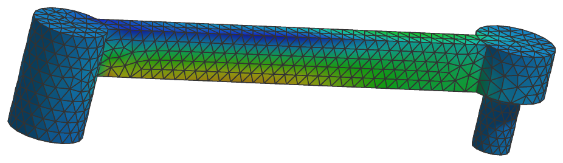
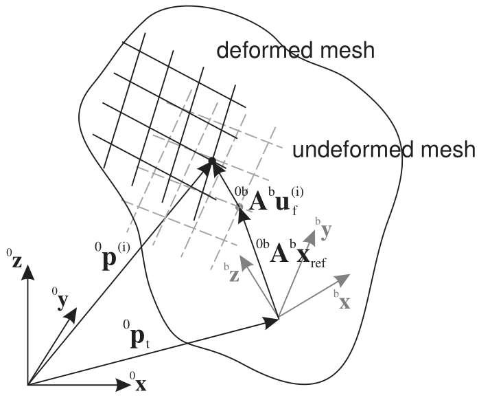

ObjectFFRFreducedOrder
This object is used to represent modally reduced flexible bodies using the FFRF and the CMS. It can be used to model real-life mechanical systems imported from finite element codes or Python tools such as NETGEN/NGsolve, see the FEMinterface in Class function: init. It contains a RigidBodyNode (always node 0) and a NodeGenericODE2 representing the modal coordinates. Currently, equations must be defined within user functions, which are available in the FEM module, see class ObjectFFRFreducedOrderInterface, especially the user functions UFmassFFRFreducedOrder and UFforceFFRFreducedOrder, Class function: AddObjectFFRFreducedOrderWithUserFunctions.


Authors: Gerstmayr Johannes, Zwölfer Andreas
Interface
Python names:
ObjectFFRFreducedOrderorCMSobject, andVCMSobjectfor its visualizationBody markers that can be placed on it: MarkerBodyMass, MarkerBodyPosition, MarkerBodyRigid, MarkerSuperElementPosition, MarkerSuperElementRigid
Nodes: see the detailed description
Parameters
The parameters of the item; in a dictionary, its type is ‘FFRFreducedOrder’:
name |
type |
size |
default |
description |
|---|---|---|---|---|
name |
String |
‘’ |
objects’s unique name |
|
nodeNumbers |
ArrayNodeIndex |
[] |
(symbol: \(\mathbf{n} = [n_0,\,n_1]\tp\)) node numbers of rigid body node and NodeGenericODE2 for modal coordinates; the global nodal position needs to be reconstructed from the rigid-body motion of the reference frame, the modal coordinates and the mode basis |
|
massMatrixReduced |
PyMatrixContainer |
[] |
(symbol: \(\Mm\indred \in \Rcal^{n_m \times n_m}\)) body-fixed and ONLY flexible coordinates part of reduced mass matrix; provided as MatrixContainer(sparse/dense matrix) |
|
stiffnessMatrixReduced |
PyMatrixContainer |
[] |
(symbol: \(\Km\indred \in \Rcal^{n_m \times n_m}\)) body-fixed and ONLY flexible coordinates part of reduced stiffness matrix; provided as MatrixContainer(sparse/dense matrix) |
|
dampingMatrixReduced |
PyMatrixContainer |
[] |
(symbol: \(\Dm\indred \in \Rcal^{n_m \times n_m}\)) body-fixed and ONLY flexible coordinates part of reduced damping matrix; provided as MatrixContainer(sparse/dense matrix) |
|
forceUserFunction |
ObjectFFRFreducedOrderForceUserFunction |
0 |
(symbol: \(\fv\induser \in \Rcal^{n_{ODE2}}\)) A Python user function which computes the generalized user force vector for the ODE2 equations; see description below |
|
massMatrixUserFunction |
ObjectFFRFreducedOrderMassMatrixUserFunction |
0 |
(symbol: \(\Mm\induser \in \Rcal^{n_{ODE2}\times n_{ODE2}}\)) A Python user function which computes the TOTAL mass matrix (including reference node) and adds the local constant mass matrix; see description below |
|
computeFFRFterms |
Bool |
True |
flag decides whether the standard FFRF/CMS terms are computed; use this flag for user-defined definition of FFRF terms in mass matrix and quadratic velocity vector |
|
modeBasis |
NumpyMatrix |
[] |
(symbol: \(\LU{b}{\tPsi} \in \Rcal^{n\indf \times n_{m}}\)) mode basis, which transforms reduced coordinates to (full) nodal coordinates, written as a single vector \([u_{x,n_0},\,u_{y,n_0},\,u_{z,n_0},\,\ldots,\,u_{x,n_n},\,u_{y,n_n},\,u_{z,n_n}]\tp\) |
|
outputVariableModeBasis |
NumpyMatrix |
[] |
(symbol: \(\LU{b}{\tPsi}_{OV} \in \Rcal^{n_n \times (n_{m}\cdot s_{OV})}\)) mode basis, which transforms reduced coordinates to output variables per mode and per node; \(s_{OV}\) is the size of the output variable, e.g., 6 for stress modes (\(S_{xx},...,S_{xy}\)) |
|
outputVariableTypeModeBasis |
OutputVariableType |
OutputVariableType::_None |
this must be the output variable type of the outputVariableModeBasis, e.g. exu.OutputVariableType.Stress |
|
referencePositions |
NumpyVector |
[] |
(symbol: \(\LU{b}{\xv}\cRef \in \Rcal^{n\indf}\)) vector containing the reference positions of all flexible nodes, needed for graphics |
|
objectIsInitialized |
Bool |
False |
ALWAYS set to False! flag used to correctly initialize all FFRF matrices; as soon as this flag is False, some internal (constant) FFRF matrices are recomputed during Assemble() |
|
mass |
UReal |
0. |
(symbol: \(m\)) total mass [SI:kg] of FFRFreducedOrder object |
|
inertia |
Matrix3D |
9 |
[[1,0,0], [0,1,0], [0,0,1]] |
(symbol: \(\Jm_r \in \Rcal^{3 \times 3}\)) inertia tensor [SI:kgm\(^2\)] of rigid body w.r.t. to the reference point of the body |
centerOfMass |
Vector3D |
3 |
[0.,0.,0.] |
(symbol: \(\LU{b}{\bv}_{COM}\)) local position of center of mass (COM) |
mPsiTildePsi |
NumpyMatrix |
[] |
special FFRFreducedOrder matrix, computed in ObjectFFRFreducedOrderInterface |
|
mPsiTildePsiTilde |
NumpyMatrix |
[] |
special FFRFreducedOrder matrix, computed in ObjectFFRFreducedOrderInterface |
|
mPhitTPsi |
NumpyMatrix |
[] |
special FFRFreducedOrder matrix, computed in ObjectFFRFreducedOrderInterface |
|
mPhitTPsiTilde |
NumpyMatrix |
[] |
special FFRFreducedOrder matrix, computed in ObjectFFRFreducedOrderInterface |
|
mXRefTildePsi |
NumpyMatrix |
[] |
special FFRFreducedOrder matrix, computed in ObjectFFRFreducedOrderInterface |
|
mXRefTildePsiTilde |
NumpyMatrix |
[] |
special FFRFreducedOrder matrix, computed in ObjectFFRFreducedOrderInterface |
|
centerOfMassTilde |
Matrix3D |
9 |
[[0,0,0], [0,0,0], [0,0,0]] |
(symbol: \(\LU{b}{\tilde \bv}_{COM}\)) tilde matrix from local position of COM; autocomputed during initialization |
tempUserFunctionForce |
NumpyVector |
[] |
(symbol: \(\fv_{temp} \in \Rcal^{n_{ODE2}}\)) temporary vector for UF force |
|
visualization |
VObjectFFRFreducedOrder |
parameters for visualization of item |
Renamed parameters, still taken with a DeprecationWarning: physicsMass (deprecated since 1.12.258, removed in 2031): use mass; physicsInertia (deprecated since 1.12.258, removed in 2031): use inertia; physicsCenterOfMass (deprecated since 1.12.258, removed in 2031): use centerOfMass; physicsCenterOfMassTilde (deprecated since 1.12.258, removed in 2031): use centerOfMassTilde.
Visualization parameters
The parameters of VObjectFFRFreducedOrder, given as visualization:
name |
type |
size |
default |
description |
|---|---|---|---|---|
show |
Bool |
True |
set true, if item is shown in visualization and false if it is not shown; use visualizationSettings.bodies.deformationScaleFactor to draw scaled (local) deformations; the reference frame node is shown with additional letters RF |
|
color |
Float4 |
4 |
[-1.,-1.,-1.,-1.] |
RGBA color for object; 4th value is alpha-transparency; R=-1.f means, that default color is used |
triangleMesh |
NumpyMatrixI |
[] |
a matrix of node numbers referring to the mesh nodes of the object, one triangle per row: 3 columns for flat triangles, or 6 for 6-node triangles drawn curved - the corners counterclockwise seen from outside, then the mid nodes of the edges 0-1, 1-2 and 2-0, as in GraphicsData triangles6; the mesh uses the nodes to visualize the underlying object; contour plot colors are still computed in the local frame! |
|
showNodes |
Bool |
False |
set true, nodes are drawn uniquely via the mesh, eventually using the floating reference frame, even in the visualization of the node is show=False; node numbers are shown with indicator ‘NF’ |
Drawing
Drawn as all super elements; its triangleMesh on the nodes of the mesh, deformed with bodies.deformationScaleFactor, and with showNodes its nodes.
Settings beyond those of all super elements: nodes.defaultSize, nodes.drawNodesAsPoint, nodes.show, nodes.showNumbers, nodes.tiling, openGL.advanced.initialMaxSceneSize.
Output variables
Available as OutputVariableType in sensors, Get...Output() and other functions:
output variable |
symbol |
description |
|---|---|---|
Coordinates |
all ODE2 coordinates |
|
Coordinates_t |
all ODE2 velocity coordinates |
|
Force |
generalized forces for all coordinates (residual of all forces except mass*accleration; corresponds to ComputeODE2LHS) |
|
KineticEnergy |
\(T = \frac{1}{2} \dot\qv\tp \Mm\, \dot\qv\) |
kinetic energy from the mass matrix of the current state and the velocities of the nodes; current configuration only; localPosition must be \([0,0,0]\) |
PotentialEnergy |
\(V = \frac{1}{2} \tzeta\tp \Km_\mathrm{red}\, \tzeta\) |
elastic energy of the modal coordinates; raises for a forceUserFunction; localPosition must be \([0,0,0]\) |
Detailed description
Super element output variables
Functions like GetObjectOutputSuperElement(...), see MainSystem: Object,
or SensorSuperElement, see MainSystem: Sensor, directly access special output variables
(OutputVariableType) of the mesh nodes of the superelement.
Additionally, the contour drawing of the object can make use the OutputVariableType of the meshnodes.
super element output variables |
symbol |
description |
|---|---|---|
DisplacementLocal (mesh node \(i\)) |
\(\LU{b}{\uv\indf^{(i)}} = \left( \LU{b}{\tPsi} \tzeta\right)_{3\cdot i \ldots 3\cdot i+2}= \vr{\LU{b}{\qv_{\mathrm{f},i\cdot 3}}}{\LU{b}{\qv_{\mathrm{f},i\cdot 3+1}}}{\LU{b}{\qv_{\mathrm{f},i\cdot 3+2}}}\) |
local nodal mesh displacement in reference (body) frame, measuring only flexible part of displacement |
VelocityLocal (mesh node \((i)\)) |
\(\LU{b}{\dot \uv_\mathrm{f}^{(i)}} = \left( \LU{b}{\tPsi} \dot \tzeta\right)_{3\cdot i \ldots 3\cdot i+2}\) |
local nodal mesh velocity in reference (body) frame, only for flexible part of displacement |
Displacement (mesh node \((i)\)) |
\(\LU{0}{\uv\cConfig^{(i)}} = \LU{0}{\qv_{\mathrm{t,config}}} + \LU{0b}{\Am_\mathrm{config}} \LU{b}{\pv_\mathrm{f,config}^{(i)}} - (\LU{0}{\qv_{\mathrm{t,ref}}} + \LU{0b}{\Am_{ref}} \LU{b}{\xv\cRef^{(i)}})\) |
nodal mesh displacement in global coordinates |
Position (mesh node \((i)\)) |
\(\LU{0}{\pv^{(i)}} = \LU{0}{\pRef} + \LU{0b}{\Am} \LU{b}{\pv\indf^{(i)}}\) |
nodal mesh position in global coordinates |
Velocity (mesh node \((i)\)) |
\(\LU{0}{\dot \uv^{(i)}} = \LU{0}{\dot \qv\indt} + \LU{0b}{\Am} (\LU{b}{\dot \uv\indf^{(i)}} + \LU{b}{\tilde \tomega} \LU{b}{\pv\indf^{(i)}})\) |
nodal mesh velocity in global coordinates |
Acceleration (mesh node \((i)\)) |
\(\LU{0}{\av^{(i)}} = \LU{0}{\ddot \qv\indt} + \LU{0b}{\Rot} \LU{b}{\ddot \uv\indf^{(i)}} + 2\LU{0}{\tomega} \times \LU{0b}{\Rot} \LU{b}{\dot \uv\indf^{(i)}} + \LU{0}{\talpha} \times \LU{0}{\pv\indf^{(i)}} + \LU{0}{\tomega} \times (\LU{0}{\tomega} \times \LU{0}{\pv\indf^{(i)}})\) |
global acceleration of mesh node \(n_i\) including rigid body motion and flexible deformation; note that \(\LU{0}{\xv}(n_i) = \LU{0b}{\Rot} \LU{b}{\xv}(n_i)\) |
StressLocal (mesh node \((i)\)) |
\(\LU{b}{\tsigma^{(i)}} = (\LU{b}{\tPsi_{OV}} \tzeta)_{3\cdot i \ldots 3\cdot i+5}\) |
linearized stress components of mesh node \((i)\) in reference frame; \(\tsigma=[\sigma_{xx},\,\sigma_{yy},\,\sigma_{zz},\,\sigma_{yz},\,\sigma_{xz},\,\sigma_{xy}]\tp\); ONLY available, if \(\LU{b}{\tPsi}_{OV}\) is provided and |
StrainLocal (mesh node \((i)\)) |
\(\LU{b}{\teps^{(i)}} = (\LU{b}{\tPsi}_{OV} \tzeta)_{3\cdot i \ldots 3\cdot i+5}\) |
linearized strain components of mesh node \((i)\) in reference frame; \(\teps=[\varepsilon_{xx},\,\varepsilon_{yy},\,\varepsilon_{zz},\,\varepsilon_{yz},\,\varepsilon_{xz},\,\varepsilon_{xy}]\tp\); ONLY available, if \(\LU{b}{\tPsi}_{OV}\) is provided and |
intermediate variables |
symbol |
description |
|---|---|---|
reference frame |
\(b\) |
the body-fixed / local frame is always denoted by \(b\) |
number of rigid body coordinates |
\(n\indrigid\) |
number of rigid body node coordinates: 6 in case of Euler angles (not fully available for ObjectFFRFreducedOrder) and 7 in case of Euler parameters |
number of flexible / mesh coordinates |
\(n\indf = 3 \cdot n_n\) |
with number of nodes \(n_n\); relevant for visualization |
number of modal coordinates |
\(n_m \ll n\indf\) |
the number of reduced or modal coordinates, computed from number of columns given in |
total number object coordinates |
\(n_{ODE2} = n_m + n_{rigid}\) |
|
reference frame origin |
\(\LU{0}{\pRef} = \LU{0}{\qv_{\mathrm{t}}} + \LU{0}{\qv_{\mathrm{t,ref}}}\) |
reference frame position (origin) |
reference frame rotation |
\(\ttheta\cConfig = \ttheta\cConfig + \ttheta_{ref}\) |
reference frame rotation parameters in any configuration except reference |
reference frame orientation |
\(\LU{0b}{\Rot}\cConfig = \LU{0b}{\Rot}\cConfig(\ttheta\cConfig)\) |
transformation matrix for transformation of local (reference frame) to global coordinates, given by underlying rigid body node \(n_0\) |
local vector of flexible coordinates |
\(\LU{b}{\qv\indf} = \LU{b}{\tPsi} \tzeta\) |
represents mesh displacements; vector of alternating x,y, an z coordinates of local (in body frame) mesh displacements reconstructed from modal coordinates \(\tzeta\); only evaluated for selected node points (e.g., sensors) during computation; corresponds to same vector in |
local nodal positions |
\(\LU{b}{\pv\indf} = \LU{b}{\qv\indf} + \LU{b}{\xv\cRef}\) |
vector of all body-fixed nodal positions including flexible part; only evaluated for selected node points during computation |
local position of node (i) |
\(\LU{b}{\pv\indf^{(i)}} = \LU{b}{\uv\indf^{(i)}} + \LU{b}{\xv^{(i)}\cRef} = \vr{\LU{b}{\qv_{\mathrm{f},i\cdot 3}}}{\LU{b}{\qv_{\mathrm{f},i\cdot 3+1}}}{\LU{b}{\qv_{\mathrm{f},i\cdot 3+2}}} + \vr{\LU{b}{\xv_{\mathrm{ref},i\cdot 3}}}{\LU{b}{\xv_{\mathrm{ref},i\cdot 3+1}}}{\LU{b}{\xv_{\mathrm{ref},i\cdot 3+2}}}\) |
body-fixed, deformed nodal mesh position (including flexible part) |
vector of modal coordinates |
\(\tzeta = [\zeta_0,\,\ldots,\zeta_{n_m-1}]\tp\) |
vector of modal or reduced coordinates; these coordinates can either represent amplitudes of eigenmodes, static modes or general modes, depending on your mode basis |
coordinate vector |
\(\qv = [\LU{0}{\qv\indt},\,\tpsi,\,\tzeta]\) |
vector of object coordinates; \(\qv\indt\) and \(\tpsi\) are the translation and rotation part of displacements of the reference frame, provided by the rigid body node (node number 0) |
flexible coordinates transformation matrix |
\(\LU{0b}{\Am_{bd}} = \mathrm{diag}([\LU{0b}{\Am},\;\ldots,\;\LU{0b}{\Am}])\) |
block diagonal transformation matrix, which transforms all flexible coordinates from local to global coordinates |
Modal reduction and reduced inertia matrices
The formulation is based on the EOM of ObjectFFRF, also regarding parts of notation
and some input parameters, ObjectFFRF, and
can be found in Zwölfer and Gerstmayr ZwoelferGerstmayr2021 with only small modifications in the notation.
The notation of kinematics quantities follows the floating frame of reference idea with
quantities given in the tables above and sketched in Fig. 37.


Fig. 37 Floating frame of reference with exemplary position of a mesh node i
The reduced order FFRF formulation is based on an approximation of flexible coordinates \(\LU{b}{\qv\indf}\)
by means of a reduction or mode basis \(\LU{b}{\tPsi}\) (modeBasis) and the the modal coordinates \(\tzeta\),
The mode basis \(\LU{b}{\tPsi}\) contains so-called mode shape vectors in its columns, which may be computed from eigen analysis, static computation or more advanced techniques,
see the helper functions in module exudyn.FEM, within the class FEMinterface.
To compute eigen modes, use FEMinterface.ComputeEigenmodes(...) or
FEMinterface.ComputeHurtyCraigBamptonModes(...). For details on model order reduction and component mode synthesis, see Model order reduction and component mode synthesis.
In many applications, \(n_m\) typically ranges between 10 and 50, but also beyond – depending on the desired accuracy of the model.
The ObjectFFRF coordinates and (63) (this is not done for user functions and forceVector) can be reduced by the matrix \(\Hm \in \Rcal^{(n\indf+n\indrigid) \times n_{ODE2}}\),
with the \(4\times 4\) identity matrix \(\Im\indr\) in case of Euler parameters and the reduced coordinates \(\qv\).
The reduced equations follow from the reduction of system matrices in (63),
the computation of rigid body inertia
the center of mass (and according tilde matrix), using \(\tPhi\indt\) from (60),
and seven inertia-like matrices ZwoelferGerstmayr2021,
Note that the special tilde operator for vectors \(\pv \in \Rcal^{n_f}\) of (61) is frequently used.
Equations of motion
Equations of motion, in case that computeFFRFterms = True:
(NOTE that currently the internal (C++) computed terms are zero,
but they are implemented in predefined user functions, see FEM.py, Class function: AddObjectFFRFreducedOrderWithUserFunctions. In near future, these terms will be implemented in C++ and replace the user functions.)
Note that in case of Euler parameters for the parameterization of rotations for the reference frame, the Euler parameter constraint equation is added automatically by this object.
The single terms of the mass matrix are defined asZwoelferGerstmayr2021
with the Kronecker product (In Python numpy module this is computed by numpy.kron(zeta, Im).T),
The quadratic velocity vector \(\fv_v(\qv,\dot \qv) = \left[ \fv_{v\mathrm{t}}\tp,\; \fv_{v\mathrm{r}}\tp,\; \fv_{v\mathrm{f}}\tp \right]\tp\) reads
Note that terms including \(\LU{b}{\dot \Gm} \dot \ttheta\) vanish in case of Euler parameters or in case that \(\LU{b}{\dot \Gm} = \Null\), and we use another Kronecker product with the unit matrix \(\Im_\zeta \in \Rcal^{n_m \times n_m}\),
In case that computeFFRFterms = False, the mass terms \(\Mm\indtt \ldots \Mm\indff\) are zero (not computed) and
the quadratic velocity vector \(\fv_Q = \Null\).
Note that the user functions \(\fv_{user}(mbs, t,\qv,\dot \qv)\) and
\(\Mm_{user}(mbs, t,\qv,\dot \qv)\) may be empty (=0).
The detailed equations of motion for this element can be found in ZwoelferGerstmayr2021.
Position Jacobian
For joints and loads, the position jacobian of a node is needed in order to compute forces applied to averaged displacements and rotations at nodes. Recall that the modal coordinates \(\tzeta\) are transformed to node coordinates by means of the mode basis \(\LU{b}{\tPsi}\),
The local displacements \(\LU{b}{\uv\indf^{(i)}}\) of a specific node \(i\) can be reconstructed in this way by means of
and the global position of a node, see tables above, reads
Thus, the jacobian of the global position reads
in which \(\LU{b}{\tPsi_{r=...}}\) represents the row \(r\) of the mode basis (matrix) \(\LU{b}{\Psi}\), and the matrix
Furthermore, the jacobian of the local position reads
which is used in MarkerSuperElementRigid.
Marker interfaces
Use special MarkerSuperElementPosition to apply forces, SpringDampers or spherical joints. This marker can be attached to a single node of the underlying
mesh or to a set of nodes, which is then averaged, see the according marker description.
Use special MarkerSuperElementRigid to apply torques or special joints (e.g., JointGeneric).
This marker must be attached to a set of nodes which can represent rigid body motion. The rigid body motion is then averaged for all of these nodes,
see the according marker description.
For application of mass proportional loads (gravity), you can use conventional MarkerBodyMass.
However, do not use MarkerBodyPosition or MarkerBodyRigid for ObjectFFRFreducedOrder, unless wanted, because it only attaches to the floating
frame. This means, that a force to a MarkerBodyPosition would only be applied to the (rigid) floating frame, but not onto the deformable body and
results depend strongly on the choice of the reference frame (or the underlying mode shapes).
CoordinateLoads are added for each ODE2 coordinate on the RHS of the equations of motion.
This object has no MiniExample, because it needs a finite element mesh and its modes; complete
models are NGsolveCMStutorial.py, with NGsolve, and objectFFRFreducedOrderTest.py, with a mesh and
matrices from Abaqus files; both are in the examples below.
Userfunction: forceUserFunction(mbs, t, itemNumber, q, q_t)
A user function, which computes a force vector depending on current time and states of object. Can be used to create any kind of mechanical system by using the object states.
Note that itemNumber represents the index of the ObjectFFRFreducedOrder object in mbs, which can be used to retrieve additional data from the object through
mbs.GetObjectParameter(itemNumber, ...), see the according description of GetObjectParameter.
arguments / return |
type or size |
description |
|---|---|---|
|
MainSystem |
provides MainSystem mbs to which object belongs |
|
Real |
current time in mbs |
|
Index |
integer number of the object in mbs, allowing easy access to all object data via mbs.GetObjectParameter(itemNumber, …) |
|
Vector \(\in \Rcal^n_{ODE2}\) |
FFRF object coordinates (rigid body coordinates and reduced coordinates in a list) in current configuration, without reference values |
|
Vector \(\in \Rcal^n_{ODE2}\) |
object velocity coordinates (time derivatives of |
return value |
Vector \(\in \Rcal^{n_{ODE2}}\) |
returns force vector for object |
Userfunction: massMatrixUserFunction(mbs, t, itemNumber, q, q_t)
A user function, which computes a mass matrix depending on current time and states of object. Can be used to create any kind of mechanical system by using the object states.
arguments / return |
type or size |
description |
|---|---|---|
|
MainSystem |
provides MainSystem mbs to which object belongs |
|
Real |
current time in mbs |
|
Index |
integer number of the object in mbs, allowing easy access to all object data via mbs.GetObjectParameter(itemNumber, …) |
|
Vector \(\in \Rcal^n_{ODE2}\) |
FFRF object coordinates (rigid body coordinates and reduced coordinates in a list) in current configuration, without reference values |
|
Vector \(\in \Rcal^n_{ODE2}\) |
object velocity coordinates (time derivatives of |
return value |
NumpyMatrix \(\in \Rcal^{n_{ODE2} \times n_{ODE2}}\) |
returns mass matrix for object |
Examples (Ex) and TestModels (TM) that show this item, with weblink to github: NGsolveCMStutorial.py (Ex), objectFFRFreducedOrderTest.py (TM), NGsolvePistonEngine.py (Ex), objectFFRFreducedOrderNetgen.py (Ex), objectFFRFreducedOrderAccelerations.py (TM), objectFFRFreducedOrderShowModes.py (TM), objectFFRFreducedOrderStressModesTest.py (TM), superElementRigidJointTest.py (TM)